Preface
Star Basic is the native language of Star Office which has been incorporated by Open Office and Libre Office. This means that all other supported languages must negotiate a basic bridge.
This comment from Dan Dascalescu offers a challenge to the community:
after 20 years of software development, the LibreOffice API is the crappiest one I've had the "pleasure" of working with. The documentation is horrible, spread all over the place, littered with Uyghur, or completely missing. The LibreOffice macro IDE is also extremely unhelpful.
LibreOffice Programming offers a framework for the community to take another step to change this. The starting point is Java LibreOffice Programming which we thank Andrew Davison for kindly making available provided his work is acknowledged. Since Java is not Basic it provides good insight into using non-Basic languages even if the language is different.
Changes required are reformatting for this media since the scripts have missed a lot of detail including code, generalising the content so it is more widely applicable to supported languages and complementing Java examples with examples of other language. Please contribute where you can.
© Contributors: Andrew Davison, flywire
https://creativecommons.org/licenses/by-sa/4.0/
Overview
Java LibreOffice Programming (JLOP) is intended for programmers who want to learn how to use the Java version of the LibreOffice API. This allows Java to control and manipulate LibreOffice's text, drawing, presentation, spreadsheet, and database applications, and a lot more (e.g. its spell checker, forms designer, and charting tools).
This book is not about how to use LibreOffice's GUI. I won't explain where to find a particular menu item to change text colour or run the spell checker. But I will explain how to do these kinds of things via API calls from Java programs. For instance, I describe a program that constructs a Word file full of randomly generated algebra questions, and show how a ASCII text file can be transformed into a slide presentation.
Although most of the examples are Java programs that call the LibreOffice API, I briefly look at other kinds of programming, such as Java macros and new LibreOffice functionality, accessible via menu items or as spreadsheet functions, and the dispatching of commands to the GUI.
One of my aims was to develop utility code to help flatten the steep learning curve for the API. For example, my Lo class simplifies the steps needed to initialize the API (by creating a connection to a LibreOffice process), to open/create a document, save it, and close down LibreOffice.
Another aim was to have my code work on LibreOffice and OpenOffice, which isn't difficult since their APIs are nearly identical. However, I must admit that at this stage I've restricted myself to testing the programs only on LibreOffice, and only on MS Windows.
Part 1: Basics
Chapter 1. LibreOffice API Concepts
![[Office program]](images/offProg.png)
Topics: Some History; Help and Examples for the LibreOffice SDK (loDoc, loGuide); Office as a Process; Common Structures (Interface, Property, Service, and Component); Service and Interface Inheritance Hierarchies; the Frame-Controller-Model (FCM) Relationship; Extensions; Comparison with Basic.
- Chapter (400 KB; pdf). Updated: 20th March 2017.
- Utilities (Utils/) (184 KB; zip). Updated: 13th Jan. 2017.
- How to install, compile, and run my code.
Chapter 2. Starting and Stopping
![[Crash Report]](images/crashReport.png)
Topics: Starting Office; Closing Down/Killing Office; Opening a Document; Creating a Document; Saving; Closing; Document Conversion; Bug Detection and Reporting.
- Chapter (472 KB; pdf). Updated: 20th March 2017.
- Examples (Office Tests/) (920 KB; zip). Updated: 15th August 2015.
Place Office Tests/ and Utils/ (see chapter 1) in the same directory.
Chapter 3. Examining
![[MRI]](images/mri.png)
Topics: Examining Office; Getting and Setting Document Properties; Examining a Document for API Details; Examining a Document Using MRI.
Chapter 4. Listening, and Other Techniques
Topics: Window Listeners; Office Manipulation with JNA; Dispatching; Robot Keys.
Part 2: Writer Modules
Chapter 5. Text API Overview
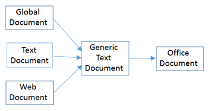
Topics: API Overview; Text Cursors; Extracting Text; Cursor Iteration; Creating Cursors; Creating a Document; Using and Comparing Text Cursors; Inserting/Changing Text in a Document; Text Enumeration; Appending Documents.
- Chapter (344 KB; pdf). Updated: 20th March 2017.
- Examples (Text Tests/) (304 KB; zip). Updated: 15th August 2015.
Place Text Tests/ and Utils/ (see chapter 1) in the same directory.
Chapter 6. Text Styles
![[Style Families]](images/styleFam.png)
Topics: Five Style Families; Properties; Listing Styles; Creating a Style; Applying Styles; Paragraph/Word Styles; Hyperlink Styling; Text Numbering; Headers and Footers.
Chapter 7. Text Content Other than Strings
Topics: Accessing Text Content; Text Frames; Embedded Objects (Math Formulae); Text Fields; Text Tables; Bookmarks.
Chapter 8. Graphic Content
Topics: Graphics; Linked Images/Shapes.
Chapter 9. Text Search and Replace
![[XSearchable]](images/textSearch.png)
Topics: Finding the First Matching Phrase; Replacing all the Matching Words; Finding all Matching Phrases.
Chapter 10. The Linguistics API
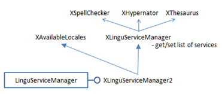
Topics: Linguistic Tools; Using the Spell Checker; Using the Thesaurus; Grammar Checking; Guessing the Language used in a String; Spell Checking and Grammar Checking a Document.
- Chapter (628 KB; pdf). Updated: 20th March 2017.
- Examples (Lingu Tests/) (40 KB; zip). Updated: 2nd August 2016.
Place Lingu Tests/ and Utils/ (see chapter 1) in the same directory.
Part 3: Draw & Impress Modules
Chapter 11. Draw/Impress APIs Overview
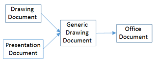
Topics: Draw Pages and Master Pages; Draw Page Details; API Hierarchy Code Examples; Shapes in a Drawing; Shapes in a Presentation ; The Slide Show APIs.
- Chapter (360 KB; pdf). Updated: 20th March 2017.
- Examples (Draw Tests/) (1.77 MB; zip). Updated: 15th August 2015.
Place Draw Tests/ and Utils/ (see chapter 1) in the same directory.
Chapter 12. Examining a Draw/Impress Document
Topics: Examining Slides/Pages; Page Layers; Styles.
- Chapter (228 KB; pdf). Updated: 20th March 2017.
- For the examples (Draw Tests/), see chapter 11.
Chapter 13. Drawing Basic Shapes
![[Filling Rectangle]](images/fillRect.png)
Topics: A Black Dashed Line; A Red Ellipse; Filled Rectangles; Text; Shape Names; A Transparent Circle and a Polar Line; A Math Formula as an OLE Shape; Polygons; Multiple Lines, Partial Elipses.
- Chapter (488 KB; pdf). Updated: 20th March 2017.
- For the examples (Draw Tests/), see chapter 11.
Chapter 14. Animation
![[Bike Animation]](images/bikeAnim.png)
Topics: Circle Movement; Line Rotation; Animating an Image; The Gallery Module.
- Chapter (292 KB; pdf). Updated: 20th March 2017.
- For the examples (Draw Tests/), see chapter 11.
Chapter 15. Complex Shapes
![[Bezier curve]](images/bezier.png)
Topics: Connecting Two Rectangles; Shape Composition (grouping, binding, and combining); Combining with Dispatches; Undoing Composition; Bezier Curves (simple and complex).
- Chapter (404 KB; pdf). Updated: 20th March 2017.
- For the examples (Draw Tests/), see chapter 11.
Chapter 16. Making Slides
![[Dispatched shapes]](images/dShapes.png)
Topics: Creating Slides: title, subtitle, bullets, images, video, buttons; Shape Animations; Dispatch Shapes (special symbols, block arrows, 3D shapes, flowchart elements, callouts, and stars); Slide Viewing.
- Chapter (572 KB; pdf). Updated: 20th March 2017.
- For the examples (Draw Tests/), see chapter 11.
- wildlife.wmv video (38.5 MB)
Chapter 17. Slide Deck Manipulation
![[Generated slide]](images/genSlide.png)
Topics: Deck Building; Master Pages; Adding a Slide to a Deck; Rearranging a Deck; Appending Two Decks; Exporting a Slide as an Image; Extracting the Text from a Deck.
- Chapter (368 KB; pdf). Updated: 20th March 2017.
- For the examples (Draw Tests/), see chapter 11.
Chapter 18. Slide Shows
Topics: Starting a Slide Show; Play and End a Slide Show Automatically; Play a Slide Show Repeatedly; Play a Custom Slide Show.
- Chapter (236 KB; pdf). Updated: 20th March 2017.
- For the examples (Draw Tests/), see chapter 11.
Part 4: Calc Modules
Chapter 19. Calc API Overview
![[Sheet Services]](images/sheetServices.png)
Topics: The Spreadsheet Document; Document Spreadsheets; Spreadsheet Data; The Spreadsheet Service; Cell Range Services; Cell Services; Sheet Cell Ranges.
- Chapter (380 KB; pdf). Updated: 20th March 2017.
- Examples (Calc Tests/) (372 KB; zip). Updated: 2nd October 2015.
Place Calc Tests/ and Utils/ (see chapter 1) in the same directory.
Chapter 20. Spreadsheet Displaying and Creation
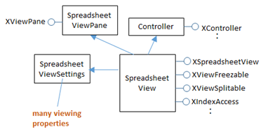
Topics: Displaying a Document; Read-only and Protected Viewing; Active Sheets; Sheet Names; Zooming; Creating a Document; Cell Names and Ranges; Cell Values; Data Arrays; Rows and Columns of Data; Adding a Picture and a Chart.
- Chapter (200 KB; pdf). Updated: 20th March 2017.
- For the examples (Calc Tests/), see chapter 19.
Chapter 21. Extracting Data
Topics: Getting a Cell Value; Getting the Data from a Cell Range; Getting Rows and Columns of Data; Obtaining Cell Ranges by Using Queries; Finding the Used Area with Sheet Cursors.
- Chapter (204 KB; pdf). Updated: 20th March 2017.
- For the examples (Calc Tests/), see chapter 19.
Chapter 22. Styles
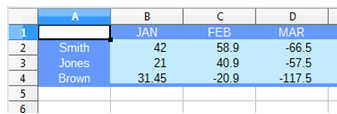
Topics: Obtaining Style Information: the TableCellStyle and TablePageStyle Services; Creating and Using a New Style; Adding Borders.
- Chapter (164 KB; pdf). Updated: 20th March 2017.
- For the examples (Calc Tests/), see chapter 19.
Chapter 23. Garlic Secrets
![[Garlic Secrets]](images/garlicSecrets.png)
Topics: Freezing Rows; GeneralFunctions; Sheet Searching; Sheet Range Queries; Hidden Cells; Cell Merging; Splitting Windows; View Panes; View State Data; Active Panes; Inserting Rows and Columns; Shifting Cells.
- Chapter (392 KB; pdf). Updated: 20th March 2017.
- For the examples (Calc Tests/), see chapter 19.
Chapter 24. Complex Data Manipulation
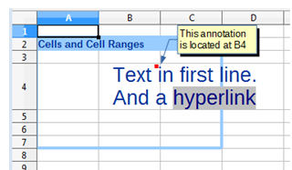
Topics: Sorting Data; Generating Data: Automatic, LINEAR Mode, DATE Mode, GROWTH Mode; Fancy Text: borders, headlines, hyperlinks, annotations.
- Chapter (228 KB; pdf). Updated: 20th March 2017.
- For the examples (Calc Tests/), see chapter 19.
Chapter 25. Monitoring Sheets
Topics: Listening for Document Modifications (XModifyListener); Listening for Application Closing (XTopWindowListener); Listening for Cell Selection (XSelectionChangeListener).
- Chapter (156 KB; pdf). Updated: 20th March 2017.
- For the examples (Calc Tests/), see chapter 19.
Chapter 26. Search and Replace
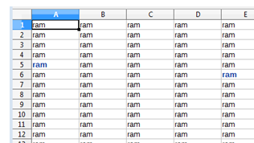
Topics: XSearchable; XReplaceable; SearchDescriptor; ReplaceDescriptor; Searching Iteratively; Searching For All Matches; Replacing All Matches.
- Chapter (228 KB; pdf). Updated: 20th March 2017.
- For the examples (Calc Tests/), see chapter 19.
Chapter 27. Functions and Data Analysis
![[Nonlinear]](images/nonlinear.png)
Topics: Calling Calc Functions from Code; Pivot Tables; Goal Seek; Linear and Nonlinear Solving (using SCO, DEPS).
- Chapter (560 KB; pdf). Updated: 20th March 2017.
- For the examples (Calc Tests/), see chapter 19.
Part 5: Chart Modules
Chapter 28. Chart2 API Overview
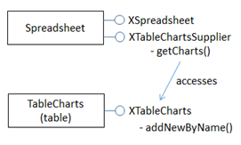
Topics: Charting Elements; Chart Creation: TableChart, ChartDocument, linking template, diagram, and data source; Modifying Chart Elements: diagram, coordinate system, chart type, data series.
- Chapter (596 KB; pdf). Updated: 20th March 2017.
- Examples (Chart2 Tests/) (36 KB; zip). Updated: 7th Nov. 2015.
Place Chart2 Tests/ and Utils/ (see chapter 1) in the same directory.
Chapter 29. Column Charts
Topics: Creating a Chart Title; Creating Axis Titles; Rotating Axis Titles; What Chart Templates are Available?; Multiple Columns; 3D Pizazz; The Column and Line Chart.
- Chapter (284 KB; pdf). Updated: 20th March 2017.
- For the examples (Chart2 Tests/), see chapter 28.
Chapter 30. Bar, Pie, Area, Line Charts
![[Donut chart]](images/donut.png)
Topics: The Bar Chart; The Pie Chart; 3D Pie; Donuts; The Area Chart; The Line Chart: multiple lines.
- Chapter (412 KB; pdf). Updated: 20th March 2017.
- For the examples (Chart2 Tests/), see chapter 28.
Chapter 31. XY (Scatter) Charts
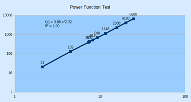
Topics: A Scatter Chart (with Regressions); Calculating Regressions; Drawing a Regression Curve; Changing Axis Scales; Adding Error Bars.
- Chapter (476 KB; pdf). Updated: 20th March 2017.
- For the examples (Chart2 Tests/), see chapter 28.
Chapter 32. Bubble, Net, Stock Charts
![[Net chart]](images/netChart.png)
Topics: The Bubble Chart; The Net Chart; The Stock Chart: basic and modified candle sticks; Stock Chart and Line Graph.
- Chapter (436 KB; pdf). Updated: 20th March 2017.
- For the examples (Chart2 Tests/), see chapter 28.
Chapter 33. Using Charts in Other Documents
Topics: Copy-and-Paste Dispatches; Adding a Chart to a Text Document; Adding a Chart to a Slide Document; Saving the Chart as an Image.
- Chapter (216 KB; pdf). Updated: 20th March 2017.
- For the examples (Chart2 Tests/), see chapter 28.
Part 6: Base Modules
Chapter 34. From JDBC to the Base API
![[Database modules]](images/sdbc.png)
Topics: Three Database Modules: sdbc, sdbcx, sdb; A Little JDBC; From JDBC to sdbc.
- Chapter (336 KB; pdf). Updated: 20th March 2017.
- Examples (Base Tests/) (276 KB; zip). Updated: 13th April 2016.
Place Base Tests/ and Utils/ (see chapter 1) in the same directory.
Chapter 35. Examining Base Documents
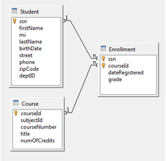
Topics: Querying an Embedded HSQLDB Database; Using Metadata when Querying; Debugging Database Code; Creating a Base Document; Processing Multiple SQL Commands; Displaying Table Relationships; Prepared Statements; Scrollable and Updatable Result Sets; Converting a Database to Text.
- Chapter (576 KB; pdf). Updated: 20th March 2017.
- For the examples (Base Tests/), see chapter 34.
Chapter 36. Using RowSets and Database Context
Topics: Using RowSets; Using the Database Context; Copying Data From Base To Calc.
- Chapter (260 KB; pdf). Updated: 20th March 2017.
- For the examples (Base Tests/), see chapter 34.
Chapter 37. Using the Driver Manager
Topics: Querying a CSV File; Querying an Access File; Querying a Calc Spreadsheet; Querying a Thunderbird Address Book.
- Chapter (232 KB; pdf). Updated: 20th March 2017.
- For the examples (Base Tests/), see chapter 34.
Chapter 38. Treating an ODB File as a Zipped Folder
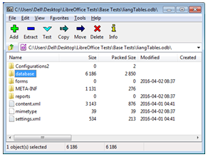
Topics: Extracting a Database from an ODB File; Querying an Extracted HSQLDB Database; Querying an Extracted Firebird Database.
- Chapter (380 KB; pdf). Updated: 20th March 2017.
- For the examples (Base Tests/), see chapter 34.
Part 7: Cross-application Modules
Chapter 39. Forms API Overview
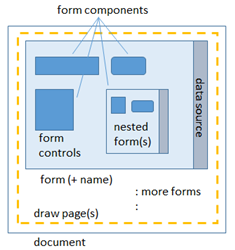
Topics: An Overview of the Forms API; Examining a Text-based Form; Attaching Listeners to a View.
- Chapter (388 KB; pdf). Updated: 20th March 2017.
- Examples (Forms Tests/) (52 KB; zip). Updated: 14th June 2016.
Place Forms Tests/ and Utils/ (see chapter 1) in the same directory.
Chapter 40. Building a Form Programmatically
![[Build a form]](images/buildForm.png)
Topics: Creating Controls; Assigning a Data Source to a Form; Creating Data-aware Controls; Attaching Listeners.
- Chapter (376 KB; pdf). Updated: 20th March 2017.
- For the examples (Forms Tests/), see chapter 39.
Chapter 41. Printing
Topics: The Java Print Service (JPS); Printing in Office Writer, Impress, Calc; Viewing a Document's Print Properties; Specialized Printing: Writer, Impress, Calc; Hacking the GUI; Command Prompt Printing.
- Chapter (600 KB; pdf). Updated: 20th March 2017.
- Examples (Printing Tests/) (744 KB; zip). Updated: 26th June 2016.
Place Printing Tests/ and Utils/ (see chapter 1) in the same directory.
Chapter 42. Sending E-mail
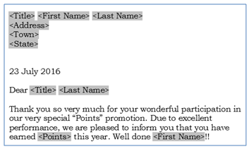
Topics: SimpleSystemMail / SimpleCommandMail; Using the MailServiceProvider Service; Using JavaMail; The Desktop API; Thunderbird Scripting; Office Mail Merge.
- Chapter (468 KB; pdf). Updated: 20th March 2017.
- Examples (Mail Tests/) (132 KB; zip). Updated: 8th July 2016.
Place Mail Tests/ and Utils/ (see chapter 1) in the same directory.
Chapter 43. Using the Clipboard
Topics: The Office Clipboard API: adding, retrieving, text, images; Java's Clipboard API adding, retrieving, text, images, 2D arrays; Copy and Pasting in an Office Document: Writer, Calc, Impress, Base.
- Chapter (512 KB; pdf). Updated: 20th March 2017.
- Examples (Clipboard Tests/) (416 KB; zip). Updated: 21st July 2016.
Place Clipboard Tests/ and Utils/ (see chapter 1) in the same directory.
Chapter 44. Office as a GUI Component
![[SwingViewer]](images/swingViewer.png)
Topics: OOoBean; Wrapping OOoBean in a JPanel; Using the OBeanPanel; Using an Undecorated Office Window; Augmenting the User Interface: a New Toolbar Item; Augmenting the User Interface: a New Menu Item.
- Chapter (500 KB; pdf). Updated: 20th March 2017.
- Examples (GUI Tests/) (400 KB; zip). Updated: 29th August 2016.
Place GUI Tests/ and Utils/ (see chapter 1) in the same directory.
Part 8: Extending LibreOffice
Chapter 45. Coding UNO Components
![[Generated poem]](images/poem.png)
Topics: Using the RandomSents Component; Writing IDL Definitions; Using idlc.bat; Merging Type Data into a Registry Database; Generating the Java Package and Interface; Creating a Skeleton Component; Compiling the Completed Implementation; Packaging the Component; Installing the Extension; Using a New Component in a Program.
- Chapter (480 KB; pdf). Updated: 20th March 2017.
- Examples (UNO Comps Tests/) (1.51 MB; zip). Updated: 26th Sept. 2016.
Place UNO Comps Tests/ and Utils/ (see chapter 1) in the same directory.
Chapter 46. Add-ons
![[Add-on]](images/addon.png)
Topics: What is an Add-on?; Creating the EzHighlight Add-on; Creating a Partial Add-on Implementation; The FreeMarker-generated EzHighlightAddonImpl; Creating the Dialog; Configuring the Add-on; Building and Installing the OXT File.
- Chapter (616 KB; pdf). Updated: 20th March 2017.
- Examples (AddOn Tests/) (428 KB; zip). Updated: 14th Oct. 2016.
Place AddOn Tests/ and Utils/ (see chapter 1) in the same directory.
Chapter 47. Calc Add-ins
![[Calc Add-in]](images/calcAddin.png)
Topics: Implementing a Calc Add-in; The IDL definitions of the Functions; XCU creation.
- Chapter (480 KB; pdf). Updated: 20th March 2017.
- Examples (Addin Tests/) (1.74 MB; zip). Updated: 4th Nov. 2016.
Place Addin Tests/ and Utils/ (see chapter 1) in the same directory.
Chapter 48. Event Macros
![[LibreLogo]](images/libreLogo.png)
Topics: Macro Locations; Naming Macro Functions; Calling Existing Macros; The LibreLogo Macro; Writing a Simple Event Macro; Automating the Assigning of Event Macros.
- Chapter (652 KB; pdf). Updated: 20th March 2017.
- Examples (EvMacro Tests/) (636 KB; zip). Updated: 16th Dec. 2016.
Place EvMacro Tests/ and Utils/ (see chapter 1) in the same directory.
Chapter 49. Extension and Document Event Macros
![[Macro dialog]](images/macroDialog.png)
Topics: Form Macros as an Extension; Loading an XML Dialog; Building a Dialog at Runtime; Storing Macros inside the (Form) Document; Attaching Macros to Other Events; Executing Macros from the Command Line.
- Chapter (528 KB; pdf). Updated: 20th March 2017.
- For the examples (EvMacro Tests/), see chapter 48.
Part 9: The ODF Format
Chapter 50. Importing XML
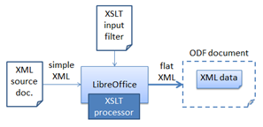
Topics: XSLT Filters; Using Filters with Java; Alternatives to XSLT Filters: DOM Parsing, Node and Attribute Data Extraction, JAXB Conversion.
- Chapter (582 KB; pdf). Updated: 20th March 2017.
- Examples (Filter Tests/) (56 KB; zip). Updated: 6th Jan. 2017.
Place Filter Tests/ and Utils/ (see chapter 1) in the same directory.
Chapter 51. Simple ODF
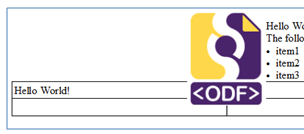
Topics: The OpenDocument Format; Doc Information; Unzipping an ODF Doc; the Simple Java API for ODF (Apache ODF Toolkit): making docs (text, sheet, and slides), slide movement, doc concatenation (text, sheet, and slides).
- Chapter (304 KB; pdf). Updated: 20th March 2017.
- Examples (ODFToolkit Tests/) (544 KB; zip). Updated: 13th Jan. 2017.
Place ODFToolkit Tests/ and Utils/ (see chapter 1) in the same directory. - A collection of all the libraries needed to get ODF Toolkit to work ("ODFToolkit Libs") (78.7 MB).
Updated: 13th Jan. 2017.